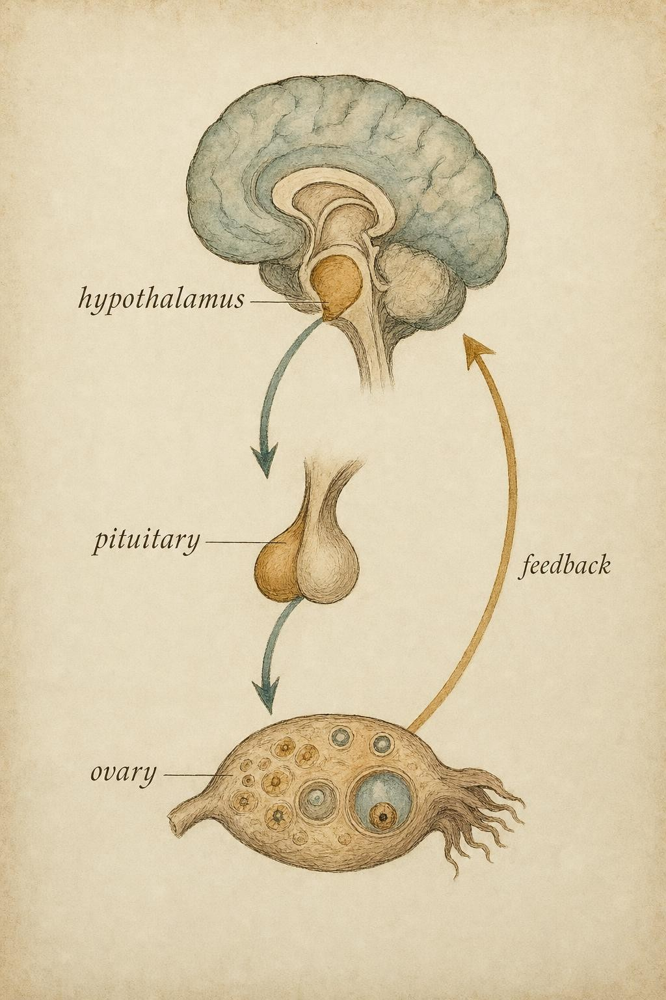
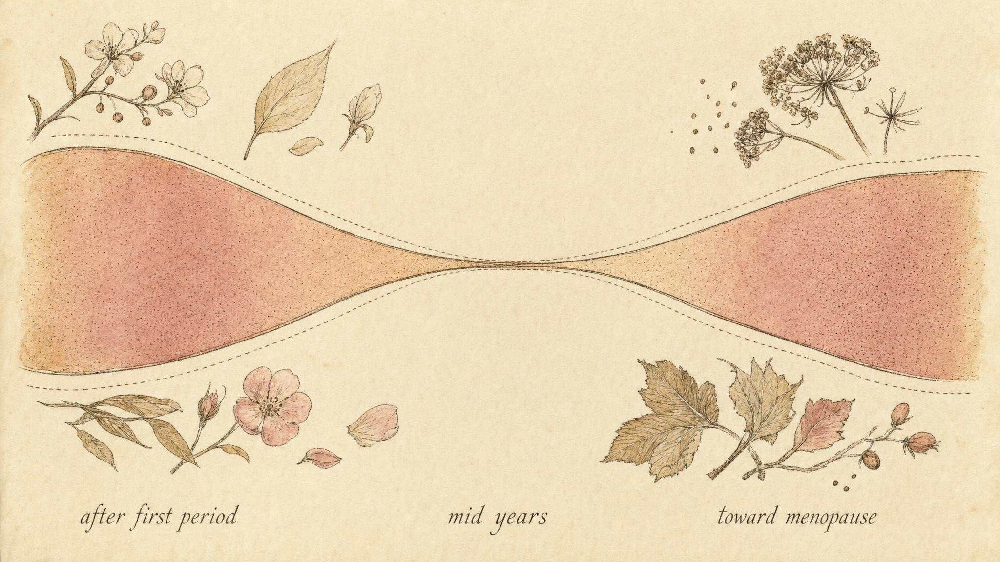

The Fifth Vital Sign
Reading the menstrual cycle as a signal of whole-system health, without overreading a single month.
When a nurse takes your pulse, your blood pressure, your temperature, and counts your breaths, nobody thinks those numbers are the whole story of your health. They are quick, cheap windows into whether the machinery underneath is running. A resting heart rate of forty can mean an endurance athlete or a failing conduction system, and the number alone does not tell you which. It tells you where to look. That is exactly the spirit in which a growing body of clinical opinion asks us to read the menstrual cycle: as a recurring, low-cost, remarkably informative window into whether the whole reproductive axis is well fed, well rested, and doing its job.
This chapter teaches you to read that window with both curiosity and restraint. A regularly ovulatory cycle says something real. A single strange month usually does not. Learning the difference is most of the skill.
Why "vital sign" is more than a slogan
In 2015 the American College of Obstetricians and Gynecologists, working through its Committee on Adolescent Health Care and endorsed by the American Academy of Pediatrics, formally asked clinicians to treat the menstrual cycle as an additional vital sign in girls and adolescents (American College of Obstetricians and Gynecologists, 2015). Their argument was pragmatic: just as an abnormal blood pressure or heart rate can surface a serious condition early, an abnormal menstrual pattern can flag a health concern that would otherwise go unnoticed for years.
A 2025 systematic review pushed the idea from slogan to criteria. Rosen Vollmar and colleagues (2025) checked the cycle against the standard tests a measurement must pass to earn the title vital sign: does it predict health outcomes, indicate when treatment is needed, let you monitor a clinical course, help identify pathology, affirm wellness when it is normal, and respond to environmental exposures? The cycle does all six, from the first period through the years after the last one. That is a high bar, and it is worth pausing on why the cycle clears it.
The reason is architectural. A predictable, ovulatory cycle is not produced by the ovaries alone. It is the visible output of a conversation that runs from the hypothalamus in the brain, to the pituitary gland just below it, to the ovaries, and back again. This loop is called the hypothalamic-pituitary-ovarian axis, or the reproductive axis for short. The hypothalamus releases gonadotropin-releasing hormone, abbreviated GnRH, in carefully timed pulses. Those pulses tell the pituitary when to release its two gonadotropins. The ovaries respond, and their hormones feed back to fine-tune the brain. When you see a regular cycle with genuine ovulation, you are seeing evidence that this entire chain has enough energy, enough rest, and enough signaling integrity to complete a month-long negotiation on schedule. That is why the cycle reports on the whole system and not just the uterus.

The cycle is the visible output of a three-part conversation." data-image-idx="0" style="display:block;max-width:100%;max-height:75vh;height:auto;width:auto;margin:0 auto;cursor:pointer;">What the gonadotropins and ovulation actually tell you
Two pituitary hormones do most of the timing work, and they are worth refreshing because their names get used loosely. Follicle-stimulating hormone rises at the transition from one cycle's luteal phase into the next cycle's follicular phase. As the name says, it stimulates a cohort of follicles to begin growing and prompts them to secrete inhibin B. In the mid-follicular phase, one follicle is selected to become dominant while the others regress (Mihm et al., 2011). Luteinizing hormone is the trigger. A sharp surge in luteinizing hormone is what actually causes the dominant follicle to release its egg. Ovulation follows the surge by roughly a day.
Here is what these hormones honestly indicate, and where folk wisdom oversells them. A luteinizing hormone surge is the best widely available real-time sign that ovulation is about to happen, which is why urine-based ovulation predictor kits detect it. But a surge is a prediction, not a confirmation. It tells you the trigger has been pulled; it does not prove the egg was released or that a functional corpus luteum formed afterward. Genuine confirmation of ovulation comes from downstream evidence, most reliably a sustained rise in progesterone in the luteal phase, and it is that confirmed ovulation, not the surge alone, that certifies the axis completed its work.
The most important myth to retire is that a regular, normal-length cycle is automatically an ovulatory one. It is not. In a population-based study of 3,709 spontaneously menstruating women in Norway, none using hormonal contraception, Prior and colleagues (2015) assessed 1,545 women in their presumed luteal phase and found that only 63.3 percent were ovulatory. Thirty-seven percent were anovulatory in the month studied. Strikingly, the ovulatory and anovulatory groups did not differ meaningfully in age, body mass index, cycle length, age at first period, smoking, or self-reported health. In other words, a woman with a textbook-looking cycle can have a month without ovulation and show no outward tell. Regularity is reassuring, but it is not proof.
This matters for how you talk about fertility. Ovulation is necessary for natural conception, so confirmed ovulation is genuinely good news about that month. But a cycle is a snapshot of function, not a guarantee of outcome. It does not measure egg quality, tubal patency, a partner's contribution, or the many other factors conception depends on. Reading a cycle can tell you the axis is working. It cannot tell any specific person that they will conceive, or when. That last leap is clinical territory, and it belongs to a clinician who can order the right tests and see the whole person.
The widget makes a point that calendar math tends to hide. The fertile phase spans roughly the five days before ovulation through the day of ovulation itself, because sperm can survive several days in the reproductive tract while the egg is viable for less than a day (Mihm et al., 2011). If you knew the exact day of ovulation, that window would be tight and confident. But you rarely know it in advance. The moment cycle length varies from month to month, the plausible ovulation day smears across a range, and the honest fertile window widens with it. This is not a flaw in your estimate. It is the true state of the knowledge, and pretending otherwise is how well-meaning advice goes wrong.
How wide is normal, really
If there is one number to unlearn, it is twenty-eight. The idea of a fixed twenty-eight-day cycle is a historical convenience, not a biological rule, and the data have said so for more than half a century. The foundational evidence comes from the TREMIN study begun at the University of Minnesota, in which Treloar and colleagues (1967) tracked roughly 2,700 women across about 25,825 person-years of menstrual records. They showed that population variability in cycle length is greatest right after the first period and again in the years just before menopause, and that average cycle length gently declines from around thirty days at age twenty to just under twenty-seven days approaching perimenopause. In the first year after menarche, the range covering the middle 95 percent of cycles spanned an astonishing 65 days.
Modern datasets, drawn from hundreds of thousands of tracked cycles, confirm and sharpen the picture. Bull and colleagues (2019) analyzed 612,613 confirmed ovulatory cycles from 124,648 users of a fertility-tracking application. The mean cycle length was 29.3 days, not 28. And even within these confirmed ovulatory cycles the internal variation was large: the follicular phase averaged 16.9 days with a 95 percent confidence interval spanning 10 to 30 days, while the luteal phase averaged 12.4 days with a confidence interval of 7 to 17 days. Cycle length shortened by about 0.18 days per year of age between 25 and 45, and its variability increased sharply above age 40.
The Apple Women's Health Study, reported by Li and colleagues (2023), added demographic texture across 165,668 cycles from 12,608 participants. Average cycle length shortened with age until about 50 and then lengthened. Asian and Hispanic participants had slightly longer cycles on average than non-Hispanic white participants. Participants with a body mass index at or above 40 kilograms per square meter had cycles about 1.5 days longer. And variability followed a U-shape across the lifespan: lowest in the 35 to 39 age band and considerably higher, by roughly 46 percent, among those under 20 and those between 45 and 49.
Put these together and a practical picture emerges. A great deal of what looks like an alarming change is simply the wide, normal texture of a healthy cycle, especially in the years just after the first period and in the approach to menopause. The physiological reviews frame the everyday normal band as roughly 26 to 35 days with about five days of bleeding (Mihm et al., 2011), but the tails are genuinely wide and shift with age. Literacy here means holding two facts at once: normal is wider than most people believe, and it is not infinitely wide.

Variability is widest at the two ends of the reproductive years and narrowest in the middle." data-image-idx="1" style="display:block;max-width:100%;max-height:75vh;height:auto;width:auto;margin:0 auto;cursor:pointer;">Notice what the explorer does and does not do. It labels regions, it never labels a person. The boundaries it uses are drawn from the literature above: cycles reliably shorter than about 21 days or longer than about 35 to 45 days, bleeding beyond about seven to eight days, or month-to-month swings large enough that you cannot predict the next period, are the patterns that reviews and guidelines flag as worth a professional look (Rosen Vollmar et al., 2025; American College of Obstetricians and Gynecologists, 2015). The tool is education. What it flags is a reason to ask, not an answer.
Signal versus a change worth a clinician's attention
The whole practical value of the fifth vital sign lives in one distinction: telling ordinary variation apart from a change that warrants professional evaluation. Get this wrong in the alarmist direction and you frighten someone over a single late period that a stressful week fully explains. Get it wrong in the dismissive direction and you wave off a pattern that deserved attention months ago. Neither serves the person in front of you, and neither is your call to make on their behalf. Your job is to notice well and to know where the boundary of your role sits.
A workable frame is to weigh three things: the size of the deviation, its persistence, and its context. A one-month oddity, even a fairly dramatic one, is usually noise, because healthy cycles are genuinely noisy. The signals that deserve a clinician's eye are the ones that persist and cluster. Consistently very short or very long cycles, bleeding that is consistently very heavy or very prolonged, cycles that stop for several months, or a clear and sustained departure from a person's own established pattern: these are patterns, not blips, and patterns are what vital signs are for.
The one recognize-and-refer thread
Two related conditions deserve special naming because they hide inside "my cycle just got irregular" and because they connect the axis directly to energy and stress. The first is amenorrhea, the absence of menstruation, whether periods never started or stopped for several months in someone who previously menstruated. The second is Relative Energy Deficiency in Sport, abbreviated RED-S, a syndrome in which chronically low energy availability disrupts many body systems, the reproductive axis among them.
The mechanism is not mysterious, and it is one of the better-established findings in the whole field. Loucks and Thuma (2003) manipulated energy availability, defined as dietary energy intake minus exercise energy expenditure, in 29 regularly menstruating young women, and found that the pulsatile release of luteinizing hormone is disrupted once energy availability falls below a threshold of roughly 30 kilocalories per kilogram of lean body mass per day. The relationship is a threshold, not a gentle slope: above the line the axis is fine, and below it the brain quiets the pulses that drive the whole cycle. This is why a cycle that grows irregular or disappears can be the first visible sign that the system is underfed or overtrained. The cycle is doing exactly its job as a vital sign, reporting that the whole organism is short on fuel.
Here is the firm line. Learning to notice the possibility of amenorrhea or RED-S is squarely within your reach and is the point of this chapter. Diagnosing either, or interpreting them for a specific person, or deciding what to do about them, is clinical work that belongs to a qualified professional. The same firmness applies to three areas where the temptation to interpret is especially strong and the stakes are especially high: contraception, which changes the cycle by design and rewrites every rule above; amenorrhea itself; and the postpartum period, where the axis is doing something genuinely different and normal ranges do not transfer. In all three, the correct move when something looks off is to recognize it and to point toward professional evaluation, not to explain it away and not to explain it yourself.
A note on the evidence, and on humility
It would be dishonest to leave you with more certainty than the science supports. The claim that a regularly ovulatory cycle reflects whole-system health is well grounded, and the energy-availability threshold is a genuinely strong result. But a large and popular industry of cycle-based training schedules, phase-specific diets, and symptom-timed supplements rests on weak, inconsistent, or contradictory data. Much of it extrapolates far beyond what the studies actually show, often from small samples with loose control of confounders. When you encounter a confident claim that you should eat, train, or supplement a particular way on a particular cycle day, the appropriate default is skepticism, not adoption. Grade the evidence honestly and say so plainly.
Finally, a word of humility that the course itself takes seriously. What you are reading is a distillation of research, and a distillation is not the territory. Clinical expertise and the lived experience of women reading their own bodies carry knowledge that no review captures. The fifth vital sign is a powerful lens precisely because it is simple and cheap, but a lens is for looking, not for concluding. Notice well, hold the boundary, and hand the interpreting to those whose role it is.
Identification of abnormal menstrual patterns in adolescence may improve early identification of potential health concerns for the rest of the reproductive years and beyond.
American College of Obstetricians and Gynecologists Committee on Adolescent Health Care, 2015
Key Takeaways
- A regularly ovulatory cycle is a vital sign because it reports on the whole reproductive axis, the loop running from the hypothalamus to the pituitary to the ovaries, and it meets all six standard criteria for a vital sign.
- Follicle-stimulating hormone recruits and grows follicles; a luteinizing hormone surge triggers ovulation. A surge predicts ovulation but does not confirm it; confirmation comes from downstream progesterone.
- A regular, normal-length cycle is not automatically ovulatory. In one population study, 37 percent of assessed cycles were anovulatory with no outward tell.
- Normal is far wider than twenty-eight days. Average length runs closer to 29 to 30 days, variability is greatest just after the first period and near menopause, and the everyday band spans roughly 26 to 35 days.
- Distinguish a change worth attention from ordinary noise by weighing size, persistence, and context. Single odd months are usually noise; persistent, clustered patterns are signal.
- Recognize, do not diagnose: amenorrhea and Relative Energy Deficiency in Sport can hide inside "my cycle got irregular," and low energy availability disrupts luteinizing hormone pulsatility below about 30 kilocalories per kilogram of lean body mass per day. Refer.
- Keep the clinician boundary firm around contraception, amenorrhea, and the postpartum period, and stay skeptical of cycle-based training and nutrition claims built on weak data.
We have named amenorrhea and Relative Energy Deficiency in Sport and traced them back to the energy-availability threshold. Next we follow that thread all the way down: what happens across the axis when the system runs short of fuel, why the body treats reproduction as optional under scarcity, and how to recognize the early signs long before a period disappears, all while keeping firmly to the recognize-and-refer role that this chapter established.
References
American College of Obstetricians and Gynecologists Committee on Adolescent Health Care. (2015). Menstruation in girls and adolescents: Using the menstrual cycle as a vital sign (Committee Opinion No. 651). https://www.acog.org/clinical/clinical-guidance/committee-opinion/articles/2015/12/menstruation-in-girls-and-adolescents-using-the-menstrual-cycle-as-a-vital-sign
Bull, J. R., Rowland, S. P., Scherwitzl, E. B., Scherwitzl, R., Danielsson, K. G., & Harper, J. (2019). Real-world menstrual cycle characteristics of more than 600,000 menstrual cycles. npj Digital Medicine, 2, 83. https://doi.org/10.1038/s41746-019-0152-7
Li, H., Gibson, E. A., Jukic, A. M. Z., Baird, D. D., Wilcox, A. J., Curry, C. L., Fischer-Colbrie, T., Onnela, J. P., Williams, M. A., Hauser, R., Coull, B. A., & Mahalingaiah, S. (2023). Menstrual cycle length variation by demographic characteristics from the Apple Women's Health Study. npj Digital Medicine, 6, 100. https://doi.org/10.1038/s41746-023-00848-1
Loucks, A. B., & Thuma, J. R. (2003). Luteinizing hormone pulsatility is disrupted at a threshold of energy availability in regularly menstruating women. The Journal of Clinical Endocrinology & Metabolism, 88(1), 297–311. https://doi.org/10.1210/jc.2002-020369
Mihm, M., Gangooly, S., & Muttukrishna, S. (2011). The normal menstrual cycle in women. Animal Reproduction Science, 124(3–4), 229–236. https://doi.org/10.1016/j.anireprosci.2010.08.030
Prior, J. C., Naess, M., Langhammer, A., & Forsmo, S. (2015). Ovulation prevalence in women with spontaneous normal-length menstrual cycles: A population-based cohort from HUNT3, Norway. PLOS ONE, 10(8), e0134473. https://doi.org/10.1371/journal.pone.0134473
Rosen Vollmar, A., Wang, S., Wallace, R., & Mahalingaiah, S. (2025). The menstrual cycle as a vital sign: A comprehensive review. Fertility and Sterility Reviews. https://doi.org/10.1016/j.xfnr.2024.100081
Treloar, A. E., Boynton, R. E., Behn, B. G., & Brown, B. W. (1967). Variation of the human menstrual cycle through reproductive life. International Journal of Fertility, 12(1, Pt. 2), 77–126. https://pubmed.ncbi.nlm.nih.gov/5419031/